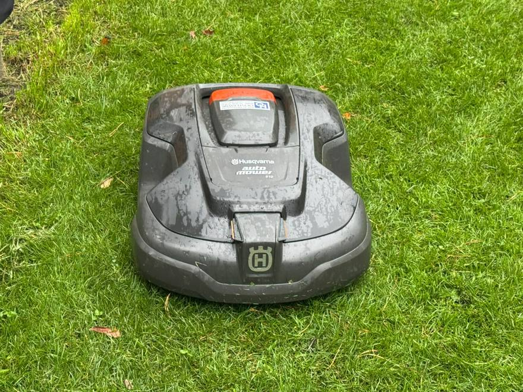
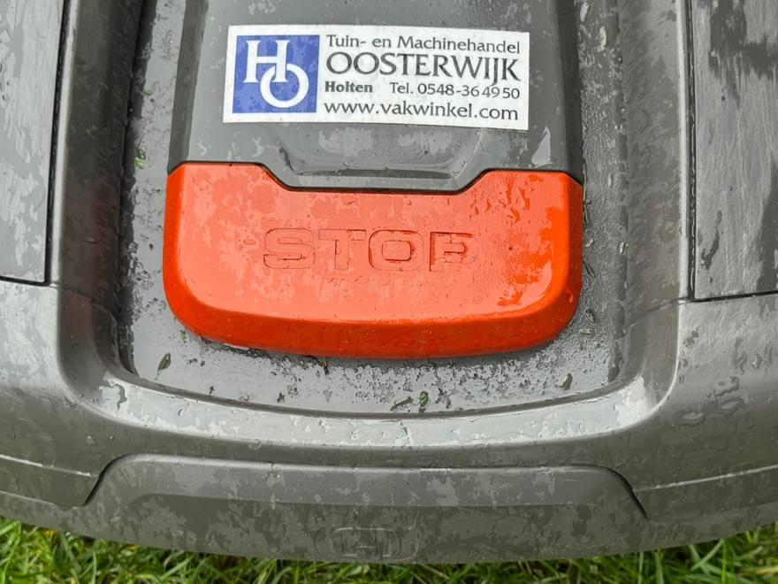
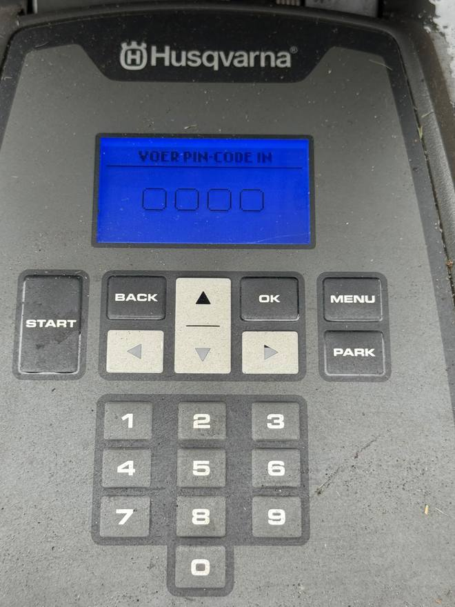
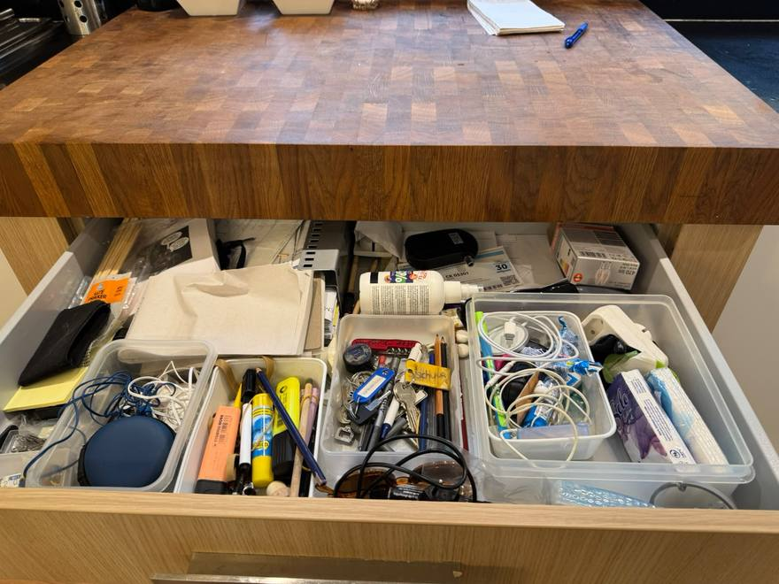
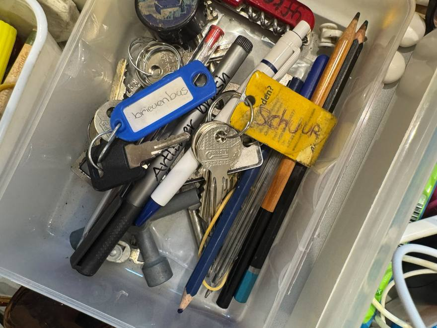
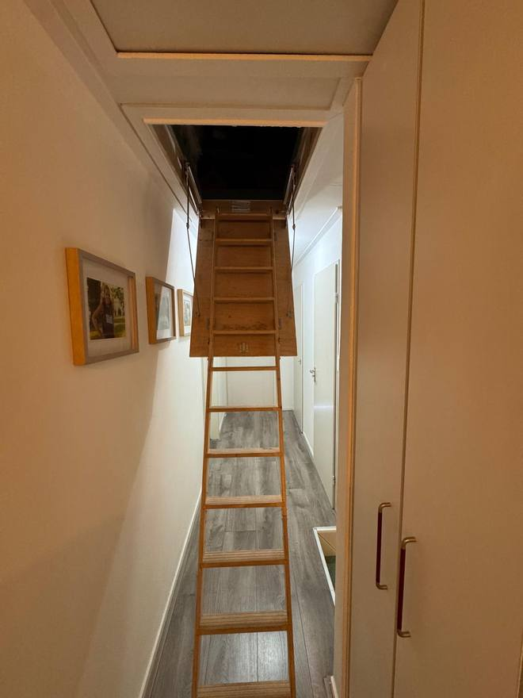
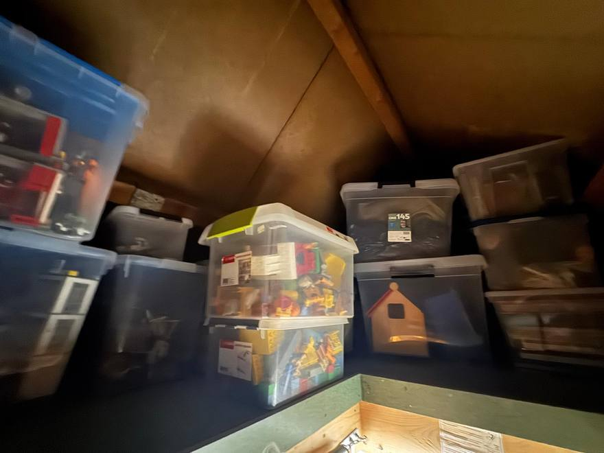
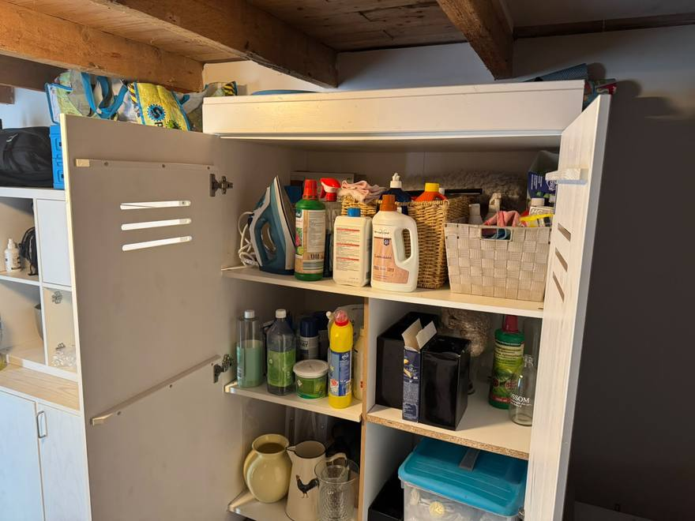

HuisregelsHouse rules
Willen jullie rekening houden met het volgende?
Het is een rustige buurt middenin de natuur. Je mag het best gezellig hebben, maar rekening houden met de buren wordt gewaardeerd.
- Doe het hek bij de oprit ’s avonds en ’s nachts graag dicht. Op slot hoeft niet.
- In huis hoeven de schoenen niet uit, behalve als ze vies zijn van zand of modder. Trek ze dan buiten of in de schuur uit.
- Het wordt gewaardeerd als het huis netjes gehouden wordt. Laat het bij vertrek zo schoon achter als jullie het bij aankomst aantroffen.
- Zet bij vertrek de vaatwasser nog even aan met de laatste vuile vaat.
- Sproei in de zomer bij droog weer de tuin. Zie de pagina Zwembad & tuin.
Als er iets sneuvelt
Wij snappen dat er af en toe een ongelukje gebeurt. Gaat er iets kapot in de categorie glas of kopje, dan hoeft dat niet vergoed te worden; laat het ons wel even weten. Raken er grote dingen beschadigd, dan vinden we samen wel een oplossing.
Het huis staat in het bos
Dat betekent dat je dieren rond het huis tegenkomt: eekhoorntjes, vogels, egels, kikkers, muizen en af en toe een ree. Binnen hoor je soms een muis. Laat deuren daarom niet onnodig openstaan, want een muisje sluipt zo naar binnen.
De robotmaaier
De robotmaaier maait van 9.00 tot 18.00 uur. Zorg dat er niets in het gras ligt waar hij niet overheen kan of wat hij stuk maakt: handdoeken, ballen en de tuinslang blijven het vaakst liggen.
Uitzetten kan met de STOP-knop achterop. Onder de klep zit het toetsenbord: voer de pincode 2580 in en druk op START om hem weer te laten rijden.
A few things we would ask of you
This is a quiet neighbourhood in the middle of the woods. By all means enjoy yourselves, but we appreciate it when the neighbours are kept in mind.
- Please close the gate at the drive in the evening and at night. It does not need locking.
- Shoes may stay on indoors, unless they are covered in sand or mud. Take those off outside or in the shed.
- We appreciate the house being kept tidy. Please leave it as clean as you found it.
- Before you leave, run the dishwasher once more with the last of the dirty dishes.
- In summer, in dry weather, please water the garden. See the Pool & garden page.
If something breaks
We understand that accidents happen. If something in the glass-or-mug category breaks, there is nothing to pay; just let us know. If something substantial is damaged, we will find a solution together.
The house stands in the forest
Which means you will meet animals around it: squirrels, birds, hedgehogs, frogs, mice and now and then a roe deer. Indoors you sometimes hear a mouse. So please do not leave doors open unnecessarily , a mouse slips in quickly.
The robot mower
The robot mower runs from 9:00 to 18:00. Please keep the lawn clear of anything it cannot drive over or might destroy; towels, balls and the garden hose are the usual casualties.
You can stop it with the STOP button on the back. The keypad sits under the lid: enter the PIN 2580 and press START to send it on its way again.



Post, afval & fietsenPost, waste & bicycles
Brievenbus en krant
De sleutel van de brievenbus ligt in de bovenste la onder het houten keukenblok. Zouden jullie de post en de kranten er elke dag uit willen halen en op de bar leggen? De krant mag je natuurlijk lezen: de NRC komt maandag tot en met zaterdag, de Tubantia op zaterdag.
Afval
Elke dinsdag wordt er één container geleegd, en elke week is een andere container aan de beurt. Het schema ligt op de bar.
Zet de container maandagavond al aan de weg, op het gras tegenover het huis, met het handvat naar achteren.
Fietsen
In de schuur staan fietsen die je vrij kunt gebruiken; de schuursleutel zit aan de sleutelbos. Wil je liever elektrisch of met een mountainbike op pad, dan kun je huren in het dorp bij Jan Stam Fietsverhuur.
Letterbox and newspaper
The letterbox key is in the top drawer under the wooden kitchen unit. Would you empty the letterbox each day and leave the post on the bar? You’re very welcome to read the newspaper: NRC arrives Monday to Saturday, Tubantia on Saturdays.
Waste
One wheelie bin is emptied every Tuesday, and a different bin is due each week. The collection schedule is on the bar.
Put the bin out on Monday evening, on the grass opposite the house, with the handle facing away from the road.
Bicycles
There are bicycles in the shed that you are welcome to use; the shed key is on the keyring. If you’d rather ride an e-bike or a mountain bike, you can rent one in the village at Jan Stam Fietsverhuur.
- Container aan de wegBin out
- Maandagavond / Monday evening, op het gras tegenover het huis
- OphaaldagCollection
- Dinsdag, elke week een andere container. Schema op de bar
- BrievenbussleutelLetterbox key
- Bovenste la onder het houten keukenblok
- KrantNewspaper
- NRC ma–za, Tubantia op zaterdag
- FietsverhuurBike rental
- Jan Stam Fietsverhuur, Waagweg 1, 0548 366 802


DiversenOdds and ends
Speelgoed op de vlizozolder
Voor kinderen staat er speelgoed op de vlizozolder: onder andere Lego en Duplo. De trap klapt uit op de overloop.
Schoonmaakspullen
De schoonmaakmiddelen, het wasmiddel en het strijkijzer staan bij elkaar in de witte kast in de garage of bijkeuken.
Toys in the loft
There are toys for children in the loft, Lego and Duplo among them. The ladder folds down from the landing.
Cleaning things
Cleaning products, laundry detergent and the iron are together in the white cupboard in the garage and utility room.


